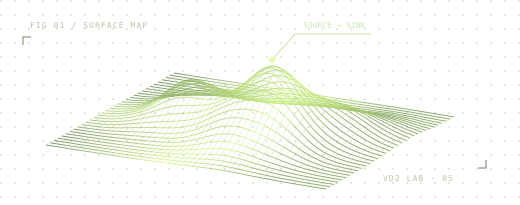

控制台
/
分析工作台
连接引擎中
VD2 LAB
/
SECURITY RESEARCH
漏洞研究工作台
提交源码或授权靶场，跟踪智能体进度，审阅本次运行的漏洞与验证证据。
浏览实验样例
↗
ENGINE
ver5

真实扫描需要运行 VD2 本地服务。请在仓库根目录执行
python3 frontend/server.py
。
打开本机工作台 ↗
·
获取完整项目 ↗
分析控制台
01
/
EXECUTION
任务配置
SCAN CONFIGURATION
分析模式
ZIP 源码分析
URL 动态探测
源码压缩包
载入示例 ZIP
↙
点击选择或拖入 ZIP 文件
.ZIP 格式 / 最大 32 MiB
关联靶场 URL
可选 · 启用 AWVS 探针
本机执行 · 仅限授权目标
开始挖掘
执行监视器
AGENT TELEMETRY
待命
正在连接 VulnCatcher 引擎
分析结果
02
/
EVIDENCE
漏洞与 POC
0
验证结果
0
任务记录
LOCAL ARCHIVE
CONFIGURATION
智能体设置